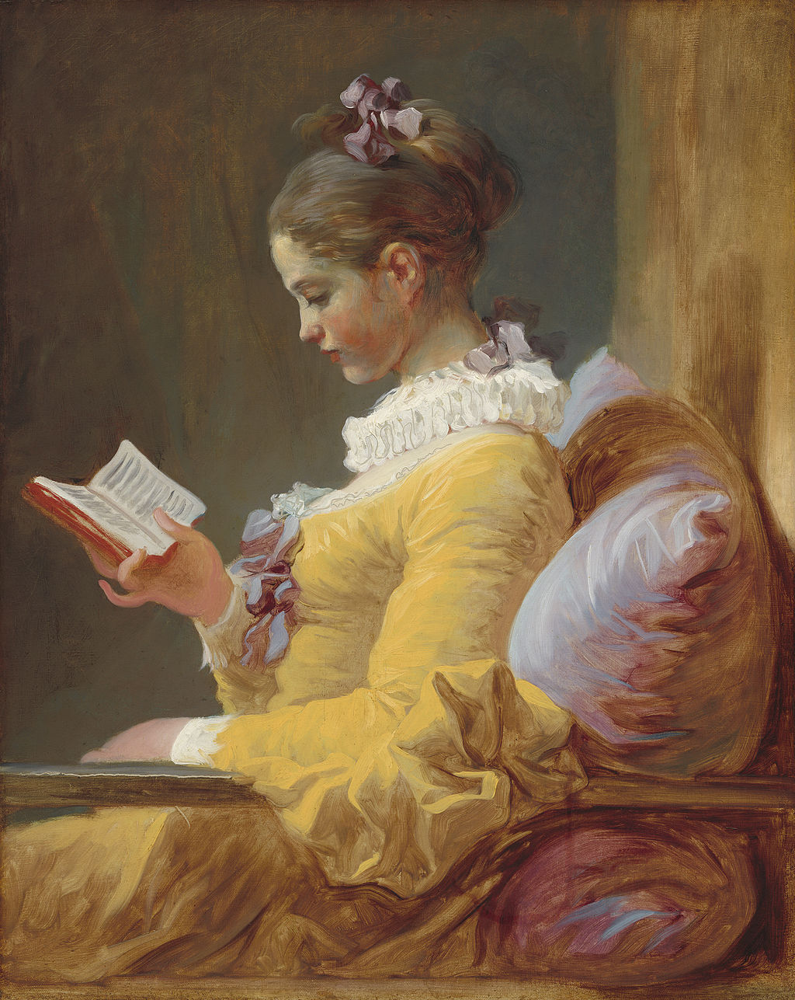

<head>
<meta charset="UTF-8" />
<meta name="keywords" content="drawing, painting" />
<meta name="description" content="drawings by Sunjy" />
<title>Sunjy</title>
<link rel="shortcut icon" type="image/x-icon" href="../../mImages/mCommon/favicon.ico" media="screen" />
<link rel="stylesheet" type="text/css" href="../../mCsses/mCommon/mCssA.css" />
<link rel="stylesheet" type="text/css" href="../../mCsses/mCommon/mCssB.css" />
<link rel="stylesheet" type="text/css" href="../../mCsses/mCommon/mCssC.css" />
<link rel="stylesheet" type="text/css" href="../../mCsses/mCommon/mCssD.css" />
<link rel="stylesheet" type="text/css" href="../../mCsses/mContent/mCssA.css" />
<link rel="stylesheet" type="text/css" href="../../mCsses/mContent/mCssB.css" />
<link rel="stylesheet" type="text/css" href="../../mCsses/mContent/mCssC.css" />
<link rel="stylesheet" type="text/css" href="../../mCsses/mContent/mCssD.css" />
</head>
<script type="text/javascript" src="../../mScripts/mContent/mContentAA.js" /></script>
<script type="text/javascript" src="../../mScripts/mContent/mContentAB.js" /></script>
<script type="text/javascript" src="../../mScripts/mContent/mContentAC.js" /></script>
<script type="text/javascript" src="../../mScripts/mContent/mContentAD.js" /></script>
<script type="text/javascript"></script> 
<script type="text/javascript">
document.write('<div class="mImgAbsolute"></div>');
/*
document.write('<p class="mFontSizeBColor" />From a white paper...</p>');
document.write('<table class="center"><tr><td>');
document.write('');
document.write('</td></tr></table>');
*/
</script>


<script type="text/javascript">
document.write('<p class="mFontSizeBColor" />A Young Girl Reading</p>');
document.write('<p class="mFontSizeSColor" />“A Young Girl Reading” by Jean-Honoré Fragonard depicts a girl in profile wearing a lemon yellow dress with a white ruff collar and cuffs and purple ribbons.<br><br>The girl is reading from a small book held, and a cushion resting against a wall supports her back. Her face and dress are lit from the front.<br><br>Fragonard used fine brushwork on the face and looser brushwork on the dress and cushion. The ruff was scratched into the paint with the end of a brush.<br><br>This painting is a genre painting of an everyday scene, and not a portrait as the name of the sitter is not known. X-rays have revealed that the canvas initially featured a different face looking towards the viewer, which Fragonard painted over. <br><br>The figure represents femininity, and the Rococo color scheme conveys emotions and a mood. The darker background color frames and emphasizes the subject’s female profile.<br><br>The face of the young girls has a rosy-tint, which adds a delicate feel to the painting. The book has no clear writing, which contributes to a sense of mystery. Is she reading for pleasure or academic purposes?<br></p>');
document.write('<table class="center" /><tr><td>');
document.write('<br>The girl is reading from a small book held, and a cushion resting against a wall supports her back. Her face and dress are lit from the front.<br><br>Fragonard used fine brushwork on the face and looser brushwork on the dress and cushion. The ruff was scratched into the paint with the end of a brush.<br><br>This painting is a genre painting of an everyday scene, and not a portrait as the name of the sitter is not known. X-rays have revealed that the canvas initially featured a different face looking towards the viewer, which Fragonard painted over. <br><br>The figure represents femininity, and the Rococo color scheme conveys emotions and a mood. The darker background color frames and emphasizes the subject’s female profile.<br><br>The face of the young girls has a rosy-tint, which adds a delicate feel to the painting. The book has no clear writing, which contributes to a sense of mystery. Is she reading for pleasure or academic purposes?<br>" />');
document.write('</td></tr></table>');
</script>


